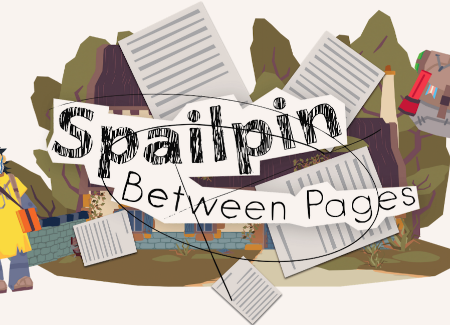
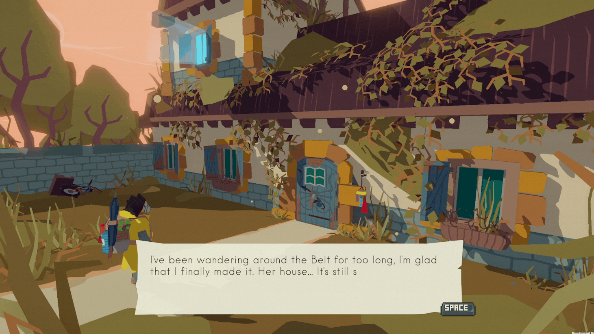
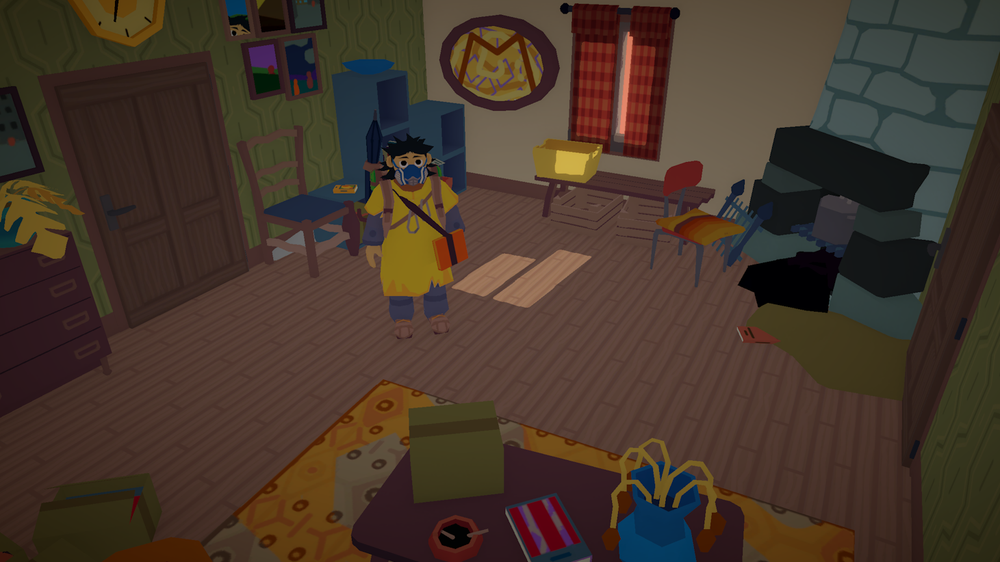
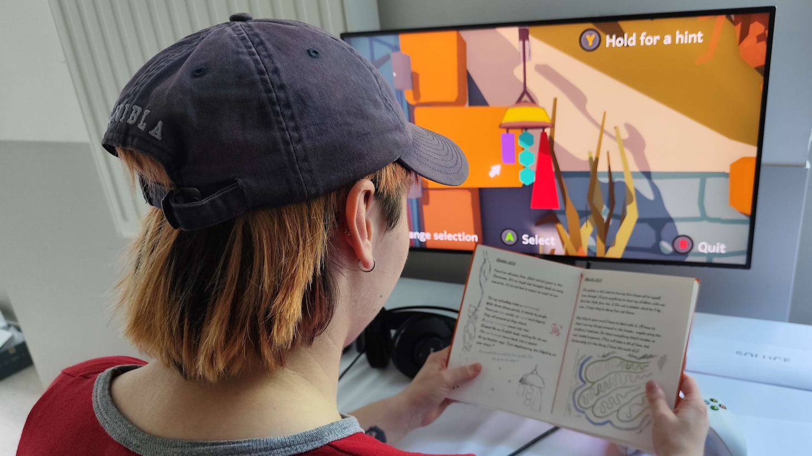
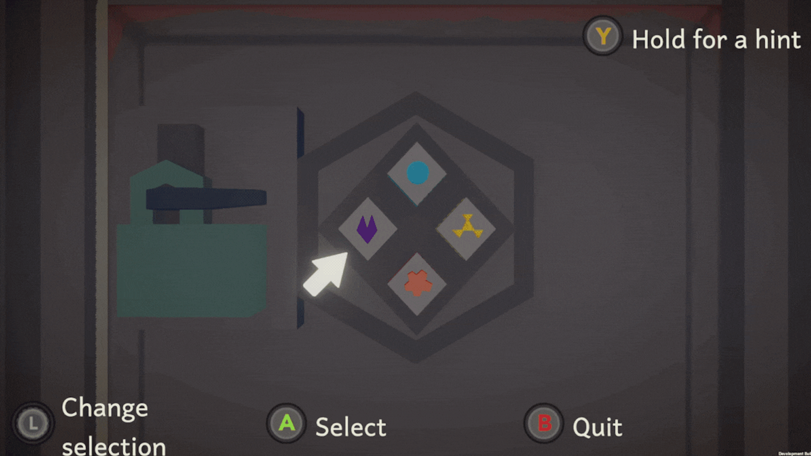

Spailpin est un jeu phygital mêlant un carnet physique à un jeu vidéo, créé durant les projets M1 au CNAM-ENJMIN. Il a été créé en Unity / C#.
Le but du joueur est de résoudre des énigmes, et comprendre l'histoire de l'univers du jeu, grâce au carnet.

C#
Unity
Jeu d'énigme phygital
3 mois
- Le jeu est phygital. Cela veut dire que pour progresser dans le jeu et résoudre ses énigmes, il
faut lire le carnet conçu spécialement pour le jeu. A l'intérieur est contenu du lore, ainsi que des
indices pour résoudre les différentes énigmes du jeu.
- Le système de localisation et le système de scripting pour les dialogues sont hérités de la série
Harold's Quest. Pour la localisation, c'est une copie exacte.
Cependant, pour le système de dialogue, seule la logique est gardée. En effet, pour faciliter le
travail des game designers, j'ai décidé de gérer de manière nodale la partie scripting, au lieu du
langage de programmation que j'utilisais pour Harold's Quest. L'implémentation nodale s'est faite
avec XNode.
- Le joueur se déplace avec une caméra fixe. Certains triggers peuvent changer l'angle de caméra
avec ou sans transition. La direction vers laquelle se déplace le joueur dépend de la rotation de
caméra.
- Les énigmes dans le jeu sont diverses, et nécessitent de lire le carnet, ou de regarder
l'environnement pour les résoudre.
- Une attention importante a été portée sur l'accessibilité, avec par exemple des contours autour
des objets interactibles, ou des tailles de textes ajustables.



